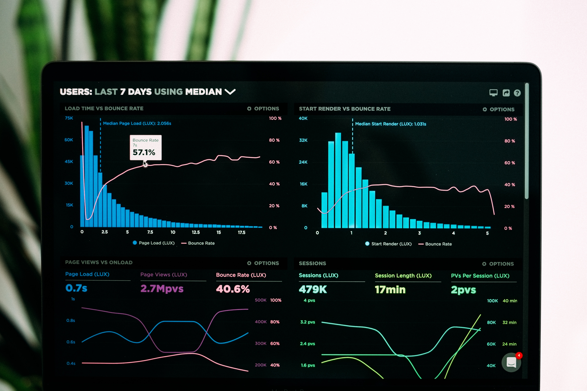

Investigação de divergência de frete entre VTEX, Softvar e transportadora via API
Identifiquei, via consumo direto da API da VTEX e análise do XML da NFe, a causa raiz de uma cobrança indevida de frete pela transportadora Total Express — um erro de conversão de peso no motor de faturamento do Softvar, que VTEX, ERP e a transportadora não conseguiam explicar. A descoberta, sustentada por evidência técnica reproduzível, expôs uma perda estimada de R$108 mil por ano e direcionou a correção ao fornecedor certo.
Ferramentas Utilizadas no Projeto
- Python (Google Colab)
- API REST (VTEX OMS)
- JSON e XML (NFe)

R$ 1,3 milhão parados no estoque: cruzamento de três fontes de dados
Cruzando base de estoque do ERP, histórico de vendas da VTEX e relatórios de expedição, identifiquei que cerca de 5.750 SKUs — quase metade do catálogo ativo — não tinham nenhuma saída registrada em 16 meses, representando ~R$1,34 milhão em capital imobilizado. O achado passou a ser indicador recorrente na apresentação mensal de saúde financeira à diretoria.
Ferramentas Utilizadas no Projeto
- Excel / Power Query
- ERP e VTEX (cruzamento multi-fonte)
- Validação cruzada de dados

Diagnóstico financeiro trimestral: separando causa operacional de queda de mercado
Diante de uma queda de receita no trimestre, segmentei o faturamento por mês, marca e canal e cruzei com indicadores logísticos, isolando uma mudança de centro de distribuição como causa raiz — não sazonalidade ou mercado. O diagnóstico virou uma apresentação executiva de 10 slides e evitou decisões estratégicas equivocadas.
Ferramentas Utilizadas no Projeto
- Excel / Power Query
- Análise de séries temporais
- PowerPoint (storytelling executivo)

Simulador de Budget P&L: do orçamento estático ao modelo de cenários
Construí um simulador de DRE mês a mês com premissas editáveis (receita, custos, frete, despesas) e uma linha explícita de EBITDA, complementado por um Rolling Forecast de fluxo de caixa — transformando o orçamento anual em uma ferramenta viva de decisão em vez de um documento arquivado.
Ferramentas Utilizadas no Projeto
- Excel avançado (modelagem multi-aba)
- DRE Gerencial com EBITDA explícito
- Rolling Forecast de caixa

Pipeline ETL automatizado: do ERP à análise, sem extração manual
Substituí a exportação manual diária de relatórios do ERP por um pipeline de ETL com GitHub Actions e Supabase, com diagnóstico prévio da API em Python/Colab para garantir estabilidade — eliminando uma tarefa manual repetitiva e criando uma base de dados histórica e consultável.
Ferramentas Utilizadas no Projeto
- GitHub Actions
- Python
- Supabase / PostgreSQL